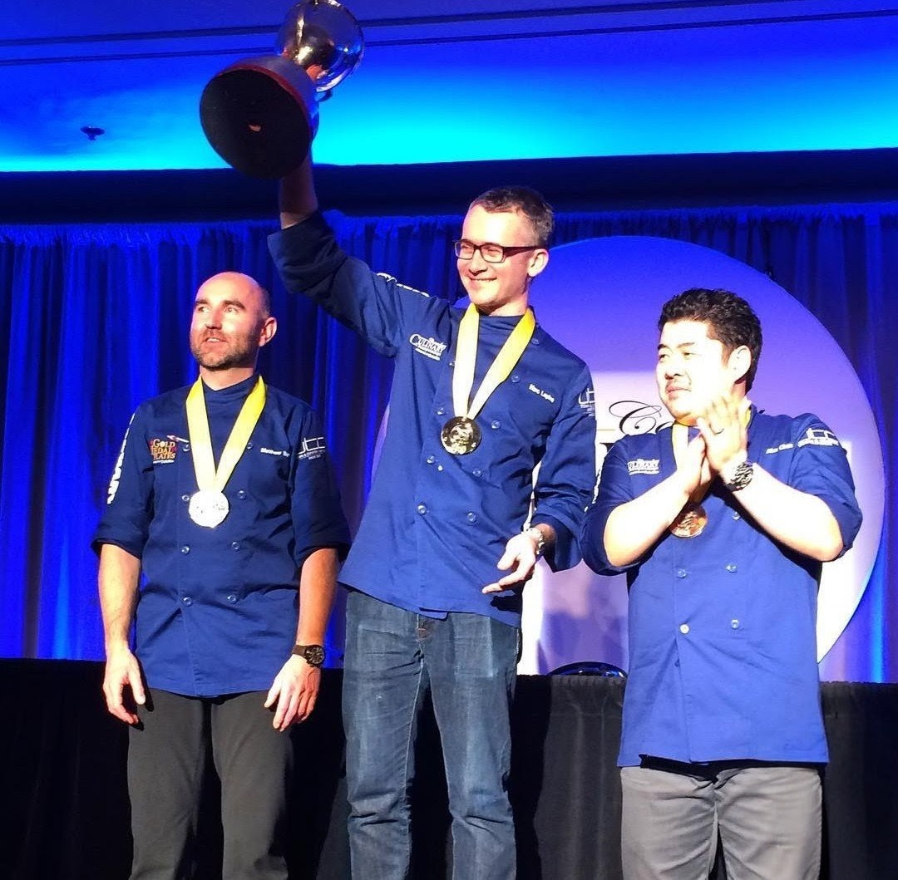

Marc Lepine has been named Ottawa's Chef of Distinction for the 2027 Canadian Culinary Championship, securing him a place at nationals in January without having to compete in this year's regional round. It's a distinction built on two national gold medals, in 2012 and 2016 — a record that remains unmatched by any chef in the competition's history, not just Ottawa's.
That record says something about how rare this level of success actually is. In the two-decade history of the Canadian Culinary Championship, only three chefs have ever brought the national title home to the capital: Briana Kim, now of Antheia; Yannick Lasalle; and Lepine, twice. That's four championship wins total, in a competition run every year across the entire country.
This year's regional competition takes place September 21 at Raphaël, with five Ottawa-area chefs competing for the second spot alongside Lepine at nationals: Jason Sawision of Stofa, Joe Thottungal of Coconut Lagoon, Yannick Lasalle — now executive chef at the Supreme Court of Canada — Lizardo Becerra of Raphaël, and Ian Carswell of Black Tartan Kitchen in Carleton Place.
Sawision's name in that lineup carries its own history. He was Lepine's sous chef at Atelier for both national wins, in 2012 and 2016 — meaning a win on September 21 wouldn't just send him to nationals, it would put the two of them on that stage together again for the first time since those championship runs.
Lasalle's presence in the lineup is also notable on its own. He's not chasing a first national title — he's already won one. A past champion returning to compete for the chance to do it again says as much about the depth of talent in this competition as Lepine's own record does.
The evening itself supports a cause well beyond the podium. Proceeds from Great Kitchen Party events go toward MusiCounts and Spirit North, two national charities focused on music education and youth sport access, alongside local Ottawa initiatives addressing food insecurity among children and youth in the city.
Whoever wins on September 21 will join Lepine at the Canadian Culinary Championship in January 2027, competing for the chance to bring a fifth national title home to the capital.